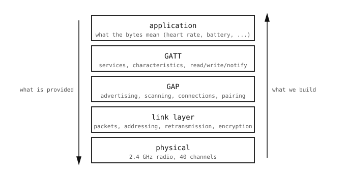

11.2. BLE stog¶
Poput umrežavanja, Bluetooth Low Energy izgrađen je kao stog slojeva, od kojih svaki rješava jedan problem i izlaže čistu apstrakciju sloju iznad. Nazivi u nastavku dolaze izravno iz specifikacije Bluetooth Core i pojavljuju se u API-jima aioble i bluetooth.

Bluetooth Low Energy stog. Svaki sloj predaje čišću apstrakciju sljedećem, isti obrazac koji koristi mrežni stog.¶
Fizički sloj. Premješta bitove između dva uređaja preko 2,4 GHz radija. Odabir kanala, modulacija, snaga odašiljanja. Posao kamere je biti uključena; silicij obavlja ostalo.
Sloj veze (link layer). Premješta pakete između dva uređaja koji su pristali međusobno komunicirati. Dodaje adrese uređaja kako bi svaki paket mogao biti usmjeren prema jednom susjedu, raspoređuje periodične radio događaje koji čine vezu te obrađuje ponovni prijenos svakog paketa koji primatelj nije potvrdio.
Generic Access Profile (GAP). Sloj otkrivanja i povezivanja. Definira četiri uloge – broadcaster, observer, peripheral, central – te protokol oglašavanja / skeniranja koji omogućuje dvama uređajima da se uopće pronađu, plus postupak otvaranja i zatvaranja veze među njima. Ovdje žive adrese, korisni sadržaji oglašavanja, parametri veze i uparivanje.
Generic Attribute Profile (GATT). Podatkovni sloj. Smješten na vrhu otvorene GAP veze i izlaže malu bazu podataka ključ/vrijednost: jedna strana ugošćuje stablo imenovanih vrijednosti zvanih karakteristike, druga ih strana čita, upisuje ili se na njih pretplaćuje. Ovdje teku stvarni aplikacijski bajtovi.
Aplikacija. Što god kamera i ravnopravni uređaj dogovore da bajtovi znače. Bluetooth SIG objavljuje standardne profile – otkucaji srca, razina baterije, mjerenje okoliša – koji definiraju često korištene karakteristike kako bi nepovezani uređaji mogli međusobno surađivati, ali svaka je aplikacija slobodna definirati vlastite.
11.2.1. Kako se slojevi slažu tijekom izvođenja¶
Obrazac odgovara mrežnom stogu:
Aplikacijski bajtovi ulaze u vrijednost karakteristike.
GATT to omata zaglavljem koje identificira kojoj karakteristici bajtovi pripadaju.
GAP održava otvorenu vezu pokrenutom kako bi GATT imao kamo slati.
Sloj veze omata cijeli skup u paket, adresiran na adresu uređaja ravnopravne strane, i raspoređuje radio događaj za njegovo odašiljanje.
Fizički sloj pretvara paket u kratki nalet 2,4 GHz radija.
Fizički sloj i sloj veze gotovo su nevidljivi iz Pythona – silicij i radio firmware ih obrađuju. Od GAP-a naviše, Python kod kamere ima više za reći.
11.2.2. Dva sloja koja API okrenut korisniku tiho preskače¶
Bluetooth specifikacija imenuje još dva sloja koji se nalaze između sloja veze i GAP-a/GATT-a: Host Controller Interface (HCI) – protokol koji glavni CPU koristi za upravljanje zasebnim radio čipom – i L2CAP – multiplekser koji dijeli jednu vezu sloja veze na nekoliko logičkih kanala.
Nijedan nije vidljiv u aioble API-ju, ali nijedan ne nestaje. HCI se nalazi unutar BLE porta i nevidljiv je osim ako je u igri prilagođena izgradnja MicroPythona, a L2CAP je nosač na kojem GATT radi. Aplikacija koja želi sirove tokove bajtova može zauzeti vlastiti L2CAP kanal (L2CAP kanali).